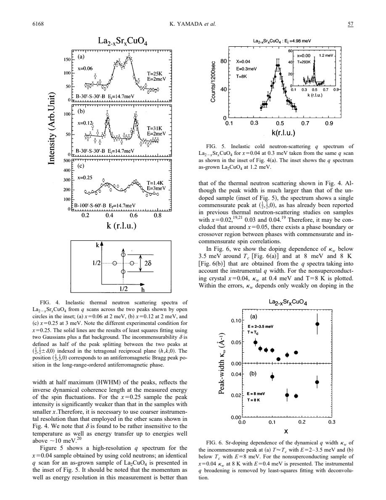
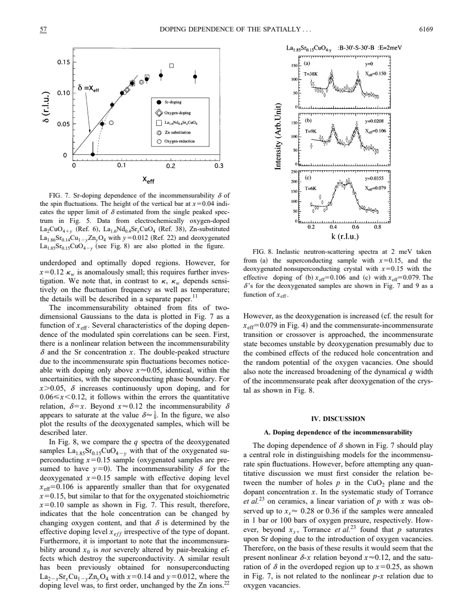
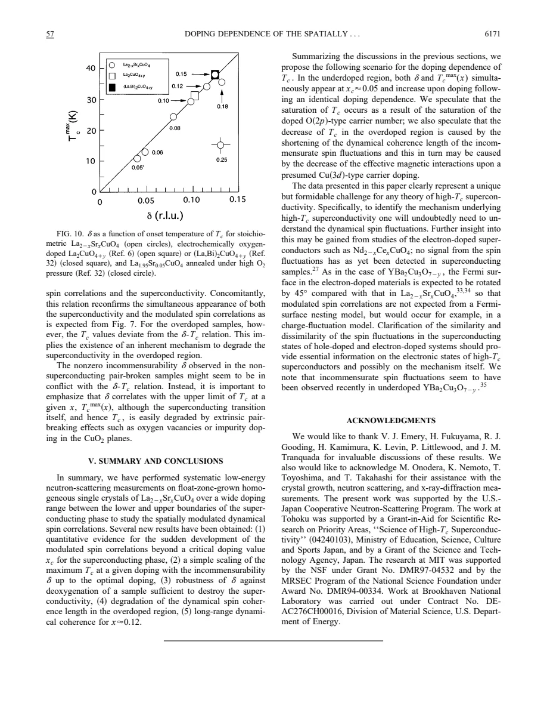

experiment · Yamada · supplied source 1998
Doping dependence of the spatially modulated dynamical spin correlations and the superconducting-transition temperature in La2-xSrxCuO4
Low-energy neutron peaks separate with doping and then saturate; their separation can survive pair breaking that destroys superconductivity.
The question: How are spin incommensurability, coherence length and superconducting transition temperature related across LSCO?
Before you start: the few terms you need
- Neutron momentum scan: distinguish peak position from peak width
- Incommensurability δ is half the peak-to-peak separation about the AF point
- Oxygen vacancies change effective holes and can also introduce disorder
See → explain → test
Understand it in four pictures.
Picture 1 / 4
Measure momentum, not an image
Look for: Neutrons scan through two displaced peaks around the antiferromagnetic wave vector.
Swipe across the picture to read every label, or enlarge it below.
- Low-energy neutron scan
- Fit peak positions and widths
- Extract δ and coherence
Teaching schematic. Reciprocal-space peaks do not uniquely image real-space charge stripes.
Peak separation measures a modulation wave vector; peak width is a different quantity.
Picture 2 / 4
Follow the two doping regimes
Look for: δ approximately equals x from 0.06 to 0.12, then tends toward 1/8.
Swipe across the picture to read every label, or enlarge it below.
- 0.06 ≤ x ≤ 0.12
- x beyond ≈0.12
Teaching schematic. Source observations, not a calculated phase boundary.
The saturation of spin modulation differs from continued chemical doping.
Check the original: PDF p. 5
Picture 3 / 4
Break pairing separately
Look for: Oxygen reduction or Zn substitution lowers Tc without necessarily erasing δ.
Swipe across the picture to read every label, or enlarge it below.
- Stoichiometric crystal
- Pair-broken crystal
Teaching schematic. Oxygen removal also changes hole count and disorder; these controls are not identical.
A spin modulation is not sufficient for superconductivity.
Picture 4 / 4
Test the causal leap
Look for: Tc scales with δ only up to optimal doping in well-treated samples.
Swipe across the picture to read every label, or enlarge it below.
- Tc–δ correlation
- Spin-based interpretations
- Mechanism not uniquely fixed
Teaching schematic. Overdoped and pair-broken samples violate a universal Tc proportional to δ rule.
The relation concerns an upper envelope of Tc and does not prove a pairing mechanism.
Predict before revealing
If Zn suppresses Tc while the neutron splitting remains, which statement is justified?
Choose an answer, then compare the reasoning.
The control separates a modulation wave vector from the existence of a bulk superconducting transition.
Read the answer
Spin modulation can survive without superconductivity The control separates a modulation wave vector from the existence of a bulk superconducting transition.
Go deeper Follow the full argument
A carefully controlled neutron series
Yamada and colleagues study floating-zone-grown LSCO crystals from x = 0 to 0.25 with common growth and heat treatment. Their aim is a quantitative comparison of low-energy dynamical spin correlations across the superconducting dome. Composition, oxygen stoichiometry, lattice constants, structural transition and diamagnetism were checked. Electron-probe measurements and transition rounding constrain macroscopic Sr gradients; this does not establish a perfectly uniform electronic distribution at nanometre scales. The x = 0.18 and 0.25 samples have Tc approximately 36 and 15 K. Common preparation reduces extrinsic relative errors, making the changes in neutron peak position more informative than comparing unrelated specimens.
What δ and the peak width actually mean
Scans pass through reciprocal positions (1/2, 1/2 ± δ, 0), indexed in the high-temperature tetragonal cell. Their separation is 2δ; δ is the offset from the commensurate antiferromagnetic position. The fitted half width kw, after accounting for instrumental resolution, reflects the inverse dynamical coherence length at the measured energy. These two quantities answer different questions: modulation period versus spatial coherence. Incommensurate low-energy peaks occur across x = 0.06 to 0.25. The source resolves only a commensurate peak at x = 0.04 in its conditions, with an upper bound on any unresolved δ. That historical low-energy result must not be converted into a general claim that all lightly doped LSCO spin correlations are commensurate under every condition.
Doping dependence and the special one-eighth region
Between approximately 0.06 and 0.12, δ follows the empirical relation δ ≈ x. Beyond x near 0.12, it tends to saturate around 1/8 while Sr content continues to increase. The authors argue that oxygen-vacancy-induced saturation of the chemical hole count cannot explain this earlier saturation in their stoichiometric range. Peak widths vary weakly over much of the underdoped and near-optimal region, with anomalously narrow peaks near x = 0.12 and broader, weaker response at x = 0.25. Width also depends on energy and temperature, so different scans cannot be compared without their conditions. The one-eighth enhancement of coherence is a source observation; a full theory of the accompanying suppression of Tc is not established here.
The oxygen-removal control is decisive but not simple
Removing oxygen from an x = 0.15 crystal reduces effective holes under xeff = x − 2y for La2−xSrxCuO4−y. At xeff approximately 0.106, superconducting diamagnetism is strongly suppressed yet the neutron splitting resembles stoichiometric x approximately 0.10. This demonstrates that δ tracks effective doping more robustly than the actual Tc under pair breaking. Stronger removal toward xeff approximately 0.079 broadens and destabilizes the split response. Oxygen vacancies change both carrier count and the random potential, so this experiment does not isolate a pure carrier-count effect. Zn comparison data, which leave nominal hole count nearly unchanged to first order, support the separate robustness of modulation against pair breaking.
Correlation with Tc and the proposed scenarios
For stoichiometric samples up to optimal doping, Tc scales approximately linearly with δ; oxygen-added comparison materials also fall near that relation. Overdoped crystals deviate because Tc decreases while δ saturates, and pair-broken crystals can retain δ without bulk superconductivity. The paper therefore interprets the relation as one involving the maximum attainable Tc at a given doping. It discusses Fermi-surface nesting, stripe pictures and carrier-character crossover. A proposed change from oxygen-like to copper-like carriers, supported indirectly through optical-weight comparisons, is explicitly speculative. Incommensurate spin response alone neither demonstrates static charge stripes nor selects a unique pairing interaction. Its durable constraint is that any account of the superconducting dome must accommodate both the modulation trend and its survival when superconductivity is degraded.
How to compare the evidence
When reading a two-peak neutron scan, mark the midpoint first, then the offset of either peak from it, and finally each peak width. The peak-to-peak separation is 2δ, whereas δ is the paper’s incommensurability; the width describes a different correlation scale. A broad pair can therefore have a similar δ but shorter dynamical coherence than a narrow pair. The oxygen-reduction experiment reinforces this distinction: effective hole count changes, while disorder and superconductivity also change. A finite incommensurability in a nonsuperconducting specimen shows that these spin correlations are not simply the superconducting order parameter. Conversely, the relation between maximum attainable Tc and δ is an empirical envelope, not an equation predicting the actual Tc of every disordered or overdoped sample.
Translate the mathematics Key equations and symbol meanings
Q = (1/2, 1/2 ± δ, 0)
Symbols: Q: spin-scattering position in tetragonal reciprocal-lattice units; δ: incommensurate offset.
Two peaks are separated by 2δ. Their widths measure coherence separately.
xeff = x − 2y
Symbols: x: nominal Sr content; y: oxygen deficiency per formula unit; xeff: effective hole doping under the ionic-count assumption.
Oxygen removal changes both this count and disorder; it is not equivalent to changing Sr alone.
δ ≈ x for 0.06 ≤ x ≤ 0.12
Symbols: x: Sr content in the stoichiometric crystals; δ: spin incommensurability.
An empirical range-limited relation, followed by saturation rather than a universal identity.
Read the evidence A guided look at the original figures

Open the full original page ↗

Open the full original page ↗

Open the full original page ↗
What this paper does—and does not—establish
- Historical 1998 data and interpretation; no updated phase diagram is implied.
- Carrier-character explanations are proposals, not direct orbital-resolved carrier measurements.
- Low-doping peak classification is restricted to the source resolution and scan conditions.
Explain it back.
Try answering aloud before opening the explanation.
Does narrower kw imply larger δ?
No. Width gives coherence and offset gives modulation; they are independent fitted observables.
Why use identical growth procedures?
They reduce relative systematic uncertainty from impurities, oxygen content and composition.
Does this directly observe static charge stripes?
No. It measures low-energy dynamical spin correlations in reciprocal space.
Connect the next paper.
Source version, reading coverage and preservation
Complete supplied substantive text read; selected main figure and equation pages rendered and visually checked
Reviewed body pages: 1, 2, 3, 4, 5, 6, 7. References checked as a bibliography but cited works were not independently re-read.
Original file retained byte for byte. SHA-256: bfeed65d9606bb8a5a046dff657a406eab0b7cc3217cacc7a5722fdceeaa4fe6
Filename: PRB - Yamada - Doping dependence of spin correlations and Tc in LSCO - 1998.pdf.